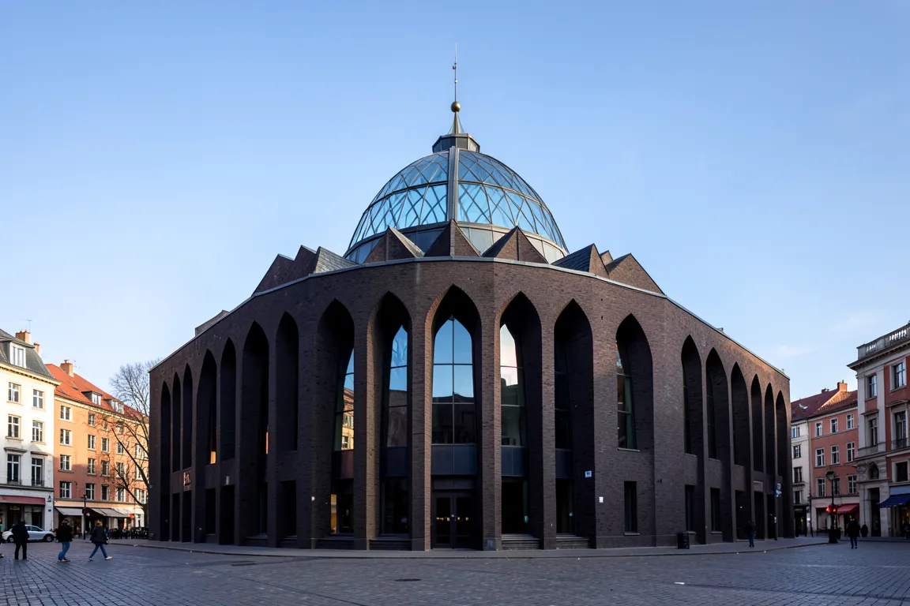

arkitektur · 1910–1925 · også: Arkitektonisk ekspresjonisme, Tysk ekspresjonisme i arkitekturen, Glass Chain
Bygninger formet som én plastisk følelsesytring. Etter første verdenskrig brukte Mendelsohn, Taut, Poelzig og Höger murstein, betong og glass til å lage krystaller, huler og flytende masser.

Kjerneidé
En bygning skal bære en indre følelse i formen: arkitekten skulpturerer én dynamisk masse, og planen og fasaden følger den gesten.
Designprinsipper
Modeller bygget som én sammenhengende skulpturell masse, med avrundede hjørner med radius 2 til 8m og ingen flat, gjentatt vegg.
Skråstill og fold veggene i diagonaler på 60 til 80 grader, slik at formen ser ut til å bevege seg.
Bruk murstein, betong eller glass som plastisk materiale: støpt, stablet eller fasettert, uten påsatt stil.
Skjær åpningene som spalter, trekanter eller bånd som følger formen, ikke et rutenett.
Lag en uttrykksfull krone eller baug på 3 til 8m som gir bygget én gjenkjennelig silhuett.
Behandle dagslys som et materiale: tone, del og konsentrer det med glass, ribber og dype laibinger.